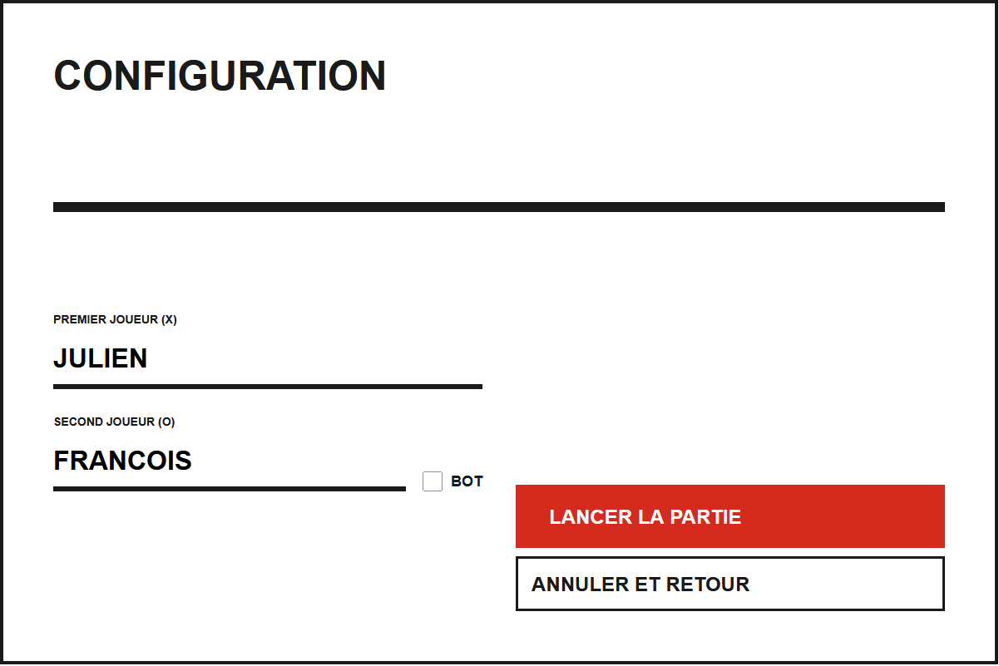
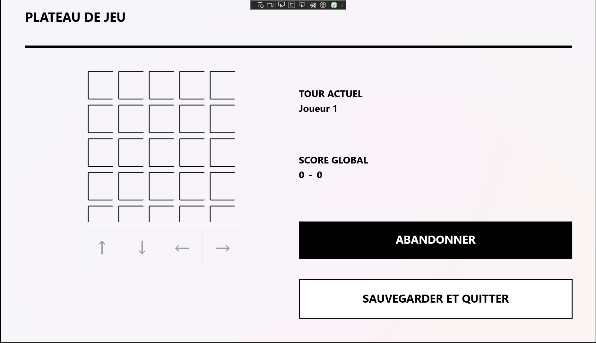

Projet Quixo
Le projet Quixo est un projet de quatorze semaines pour lequel nous devons, en groupe de trois, développer une application permettant de jouer au jeu du Quixo sur Windows principalement.
Pour réaliser ce projet, nous utilisons des langages comme le XAML pour coder les vues, c’est-à-dire l’interface graphique de notre jeu et le C# pour coder les classes qui vont permettre son bon fonctionnement. L’objectif est dans un premier temps de rendre l’application opérationnelle en lignes de commande afin de s’assurer qu'elle a bien le comportement voulu, puis d’aboutir à sa version finale, jouable avec l’interface graphique développée précédemment.
Nous avons terminé le jeu, qui est entièrement fonctionnel et jouable avec l'interface graphique (les vues). J'ai pu réaliser la vue de la page de configuration ainsi que des classes modèles (Movement) et managers (PlacementManager, ScoreManager, ...) qui permettent de stocker les données importantes pour le jeu et de les utiliser.
Ce projet m'a donc permis de mettre en pratique les compétences C1 (Développement d'application), C2 (Optimisation d'application), C5 (Conduire un projet) et C6 (Collaborer au sein d'une équipe).

